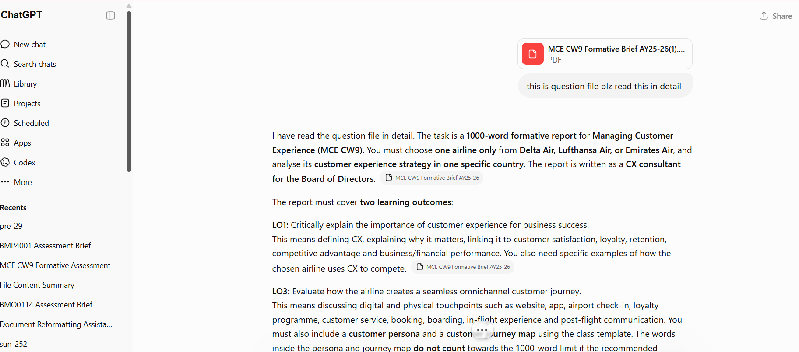
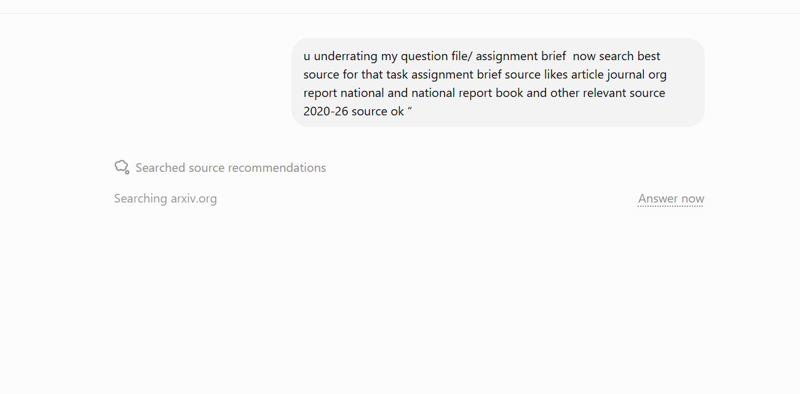
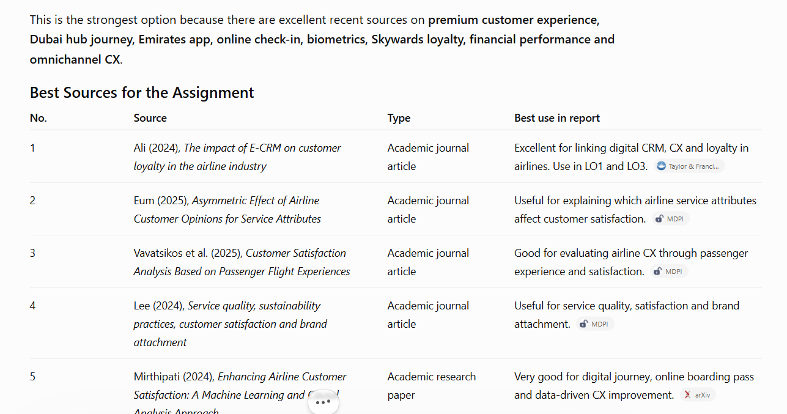
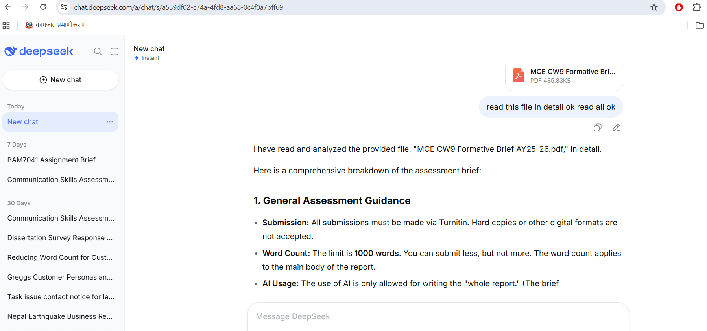
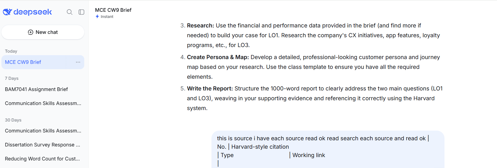
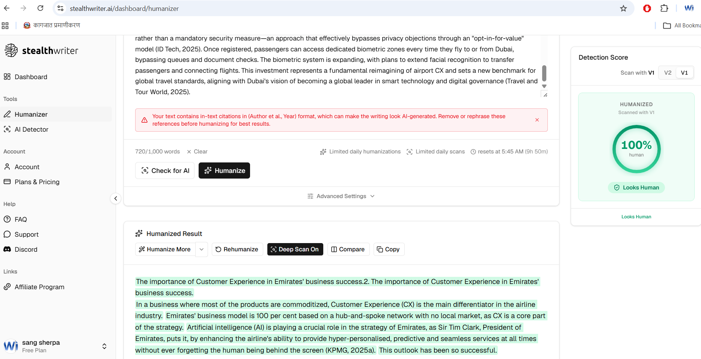
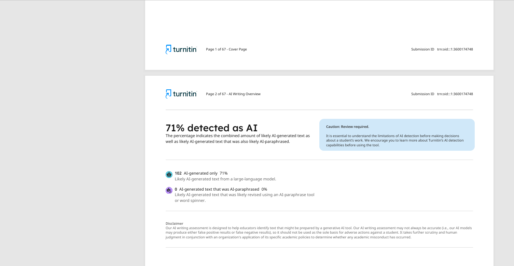
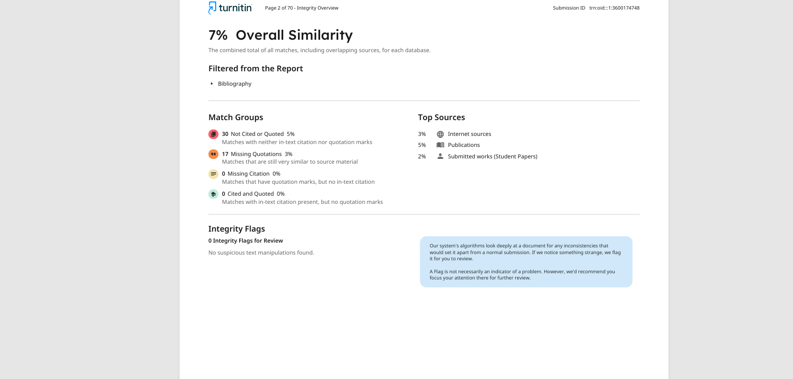

AI for IT Students:
Prompt Engineering
and AI-Assisted Programming
Learn how to use AI tools effectively — to study faster, write better code, and build real skills that matter in any IT career.
Use the sidebar to navigate · Click anywhere or press → to continue
📄 Research & Publications
🎓 Education
Welcome
Two days. Day 1: how to prompt AI. Day 2: how to build with it.
Quick Question 🙋
How many of you have already used ChatGPT, Gemini, or any AI tool before today?
Now the harder question…
How many of you feel you always get correct, useful answers from AI?
Most people say no — and that is the exact problem this workshop solves.
The core insight
You blame AI. But the problem is the prompt.
What we cover across 2 days
- What AI and Generative AI actually is
- How ChatGPT-style models work internally (simple intuition)
- Why AI makes mistakes — hallucination, bias, errors
- Why prompt engineering matters (precision, efficiency, reliability)
- Core principles of writing good prompts
- Prompt structure: Role + Task + Context + Output + Constraints
- Prompting techniques: zero-shot, few-shot, chain-of-thought, role-based, negative
- Using AI as a tutor to learn C, C++, and Python faster
- Generating and debugging code using AI
- The real developer workflow with AI
Your Bridge to the Real World
You studied C and C++ in college. The industry runs on Python. AI is going to help you cross that bridge faster than any textbook could.
The Gap — and How We Close It
C taught you how computers think. Python lets you build things that matter. Today you learn both at once — with AI as your translator.
Spend weeks reading Python docs. Re-learn syntax from scratch. No bridge between what you know and what you need.
Use AI to translate C logic to Python instantly. Understand the why behind every difference. Build real programs today.
The Rule for These Two Days
- Python is the primary language in every example and demo.
- C/C++ appears only as a reference — "you know this — now see Python."
- AI is your translator, tutor, and debugger — not just a shortcut.
Your AI Toolkit
Six free tools. All different. Use the right one for the right task — not just the one everyone knows.
| Tool | Use It When… | Watch Out For |
|---|---|---|
| ChatGPT chatgpt.com |
Learning new concepts, writing prompts, quick code help | Hallucinations — sounds confident even when wrong |
| Claude claude.ai |
Debugging code, long step-by-step explanations, following complex instructions | More cautious, may refuse edge cases |
| DeepSeek deepseek.com |
Code generation, logic reasoning, maths problems — shows thinking step by step | Slower, UI can lag |
| Perplexity perplexity.ai |
Verifying facts, checking if a function/library really exists, finding real docs | Not a coding tool — just a smart search engine |
| Google Gemini gemini.google.com |
Summarising PDFs, explaining YouTube videos, anything connected to Google Search | Less precise for pure code tasks |
| Microsoft Copilot copilot.microsoft.com |
Image generation — best free option for creating visuals, diagrams, posters from text | Not for code — purely for images and documents |
What is AI?
A clear, honest explanation — from the ground up.
The Simple Definition
Artificial Intelligence is a system that predicts the next best output based on patterns learned from large amounts of data.
It does not think. It does not understand. It predicts — extremely well, at enormous scale.
The computer follows rules precisely.
if input == "hello" → reply "hi"If the rule does not exist — the program fails.
AI finds patterns by itself.
learns from billions of examples → predictsIt can handle inputs it has never seen before.
What is Generative AI?
Generative AI is a specific type of AI that creates new content — text, code, images, audio — rather than just classifying or searching.
- ChatGPT, Claude, Gemini → generate text and code
- DALL·E, Midjourney → generate images
- GitHub Copilot → generate and complete code
In this workshop we focus on text and code generation — the most useful for IT students.
How ChatGPT-Style Models Work
Simple intuition — no math, no jargon. Just what you need to understand why prompts matter.
The Basic Flow
The model was trained on billions of text documents — books, websites, code, conversations. During training it learned patterns: which words usually follow which other words, in which contexts.
When you send a prompt, the model predicts the most statistically likely helpful continuation based on everything it learned.
Training vs Using the Model
Adjusts its internal weights to improve predictions.
Takes weeks on thousands of computers.
You do NOT control this.
Model uses its trained weights to predict the best response.
Happens in seconds.
Your prompt IS your control lever.
Why the Same Question Can Give Different Answers
AI models add slight randomness to their output so they do not always repeat the same sentences. This is called temperature.
- Low temperature → more predictable, consistent answers (good for code)
- High temperature → more creative, varied answers (good for writing)
This is why your prompt needs to be precise — a vague prompt + randomness = unpredictable output.
Key Takeaway
The model is a very powerful pattern predictor. The quality of its output depends almost entirely on the quality of your input — your prompt. This is why prompt engineering exists.
Demo: The C to Python Moment
Watch Python turn 20 lines of C into 8 lines — live on screen. The "wait, that's it?" moment.
Live Demo — Run This Now
Open ChatGPT. Type the prompt below exactly.
I know C programming. Show me the same program in C and Python side by side: store 5 student marks, find the average, print pass or fail for each. Explain every difference between the two versions.
What to Observe
- Count the lines: C typically needs 20–25. Python: 8–10.
- No
#include, noint main(), noprintfformat strings. - Python reads like English. C reads like machine instructions.
- Ask a follow-up: "Why does Python not need variable type declarations?"
AI Limitation: Hallucination
The most dangerous AI problem — and why every IT student must know about it.
What is Hallucination?
AI can generate responses that sound completely correct, professional, and confident — but are entirely false or invented. The model does not know it is wrong. It is simply predicting what a plausible-sounding answer looks like.
Example 1 — Fake Code (NASA API)
Prompt given to AI:
AI response (sounds completely real — but is entirely invented):
- The function
nasa_api.fetch_photos()does NOT exist — never has - NASA's real API works through HTTP requests to a URL, not a Python object
- If a student copies this and runs it — it will crash immediately
- AI made it up because it "sounds like" what a NASA Python function might look like
Example 2 — Fake Facts
Asking AI about a made-up function name:
AI might confidently explain a function that does not exist in the C standard library — giving it fake parameters, a fake return value, and fake examples. All sounding perfectly correct.
How to Protect Yourself
- Never run AI code without reading it first. Read every line. If a function name looks unfamiliar — search it.
- Cross-check facts. If AI tells you something important — verify it against official documentation or a trusted source.
- Ask AI to explain its answer. If the explanation has gaps or circular reasoning — it may be hallucinating.
- Test the code. Always compile and run AI-generated code to see if it actually works.
Demo: Catch the Hallucination
Two prompts. Two confident, completely false AI responses. Run them live and watch what happens.
Live Demo — Run on ChatGPT and DeepSeek
Send each prompt separately. Watch how confidently AI responds to both.
Demo 1 — Fake Python Function
Send this to ChatGPT, then DeepSeek:
What does the Python function list.findall() do? Show me an example.
list.findall()does not exist in Python — there is no such method- AI will confidently explain it, give it parameters, and show a working code example
- If you copy and run that code — it crashes with
AttributeError - AI invented it because it sounds like a real Python method name
Demo 2 — Fake News Event
Send this to ChatGPT, then DeepSeek:
Tell me about the massive tropical storm that flooded downtown Las Vegas last week.
- Geography: Las Vegas is in the Nevada desert — tropical storms cannot reach there. It is one of the driest cities in the world
- Time: "Last week" is beyond AI's knowledge cutoff — AI has no data about recent events
- Despite both of these facts, AI may describe the storm in detail — flood heights, streets affected, number of evacuations — all completely invented
- This is the most dangerous hallucination type: fabricated facts that sound exactly like real news
list.findall() Python — does this function exist? Las Vegas tropical storm flood — did this happen?
AI Limitations: Bias & Errors
Two more important limitations every IT student should be aware of.
What is AI Bias?
AI models learn from human-written data. Human writing contains cultural assumptions, stereotypes, and historical biases. The model learns these patterns and can reproduce them in its output — without knowing it is doing so.
Bias Example — The Software Engineer Story
Prompt given to AI:
A typical AI response:
"John is a brilliant software engineer who leads a team of developers. He works long hours and loves solving hard math problems. His wife, a schoolteacher, always supports him from home."
- AI assumed the engineer is male — without being told
- AI assumed the spouse is female in a domestic support role
- This reflects historical gender stereotypes in training data
- The model did not "decide" to be biased — it learned this pattern from millions of examples
Why it matters for you: When you use AI for research, reports, or explanations — be critical. Ask yourself: whose perspective is this reflecting?
What are AI Errors (Logic & Code Errors)?
Even when AI is not hallucinating, it can produce code with subtle logic errors, use outdated syntax, miss edge cases, or produce code that compiles but gives wrong results.
Error Example — Off-by-One in C
AI-generated code that compiles but gives wrong output:
This code will compile without errors but will read memory beyond the array — a classic error AI makes when it is not given the exact array size in the prompt.
Golden Rule for All Three Limitations
Never blindly copy AI output. Always read it, understand it, test it — then use it.
Why Prompt Engineering Matters
You already use AI. This section explains why learning to use it properly changes everything.
The Simple Truth
Result: generic, often useless output.
Five Reasons Prompt Engineering Matters
Think of It This Way
AI is an incredibly powerful engine. A bad prompt is like driving with your eyes closed — the engine works, but you will crash.
A good prompt is the steering wheel. Prompt engineering is the skill of steering.
Core Principle 1: Clarity & Specificity
Write prompts that leave absolutely no room for misinterpretation.
The Principle
Use specific language. Avoid ambiguous terms. Start with clear action verbs. Every word in your prompt should serve a purpose.
- Use: Analyze, Summarize, Create, Explain, Fix, List, Compare
- Avoid: "look at", "tell me about", "help with", "do something with"
Programming-Specific Examples
Core Principle 2: Context Provision
AI does not know your situation unless you tell it. Context is everything.
The Principle
Provide sufficient background information so the model understands the scenario, who you are, what you already know, and what specifically you need. Without context, AI gives a generic answer. With context, it gives a targeted answer.
What Context to Include
- Your level: "I am a first-year IT student learning C for the first time"
- What you already know: "I understand basic if/else but not recursion yet"
- The goal: "I need to submit this as an assignment"
- What is going wrong: "My program compiles but gives wrong output for negative numbers"
- The environment: "I am using GCC on Windows / using VS Code / using an online compiler"
Context Makes the Difference
Activity: Add Context, See the Difference
Same topic. Two prompts. Completely different output. Students run both and compare.
Round 1 — Open Any AI Tool and Type This
Explain Python lists
Read the output. Note how general it is.
Round 2 — Now Send This
I know C arrays. Explain Python lists to me by comparing them to C arrays. Show what's different, what's easier, and what Python lists can do that C arrays can't.
Generic definition. No connection to what you already know. Hard to remember.
Bridges from C arrays. Highlights dynamic sizing, mixed types, built-in methods. Instantly useful.
Core Principle 3: Task Decomposition
Break complex tasks into smaller steps — AI handles each step better.
The Principle
Instead of asking AI to do everything in one giant prompt, break the task into clear, numbered sub-tasks. This improves accuracy, makes the output more organised, and makes it easier for you to verify each part.
1. Explain the concept
2. Show the syntax
3. Provide a working example
4. List 2 common beginner mistakes"
Real Decomposition Example — Dataset Analysis
Programming Learning Example
Core Principle 4: Output Format Specification
Tell AI exactly how you want the answer structured — and it will deliver it that way.
The Principle
Clearly define the expected format, structure, and length of the response. If you need code + explanation, say so. If you want bullet points, ask for bullet points. If you need a specific length — specify it.
Format Options You Can Request
Format Examples for Programming
Prompt Structure: Role + Task + Context + Output + Constraints
Putting the four core principles into a single, memorable framework.
The Complete Formula
(Clarity principle)
(Clarity + Decomposition)
(Context principle)
(Output Format principle)
(Clarity + Specificity)
AI has nothing useful to work with.
Full Prompt Examples
For each prompt above, identify: which part is Role / Task / Context / Output / Constraint?
Demo: Same Prompt, Different Tools
Send the exact same prompt to ChatGPT, Claude, DeepSeek, and Gemini at the same time. Watch how differently they respond.
Live Demo — 15 Minutes
Open all four tabs. Send this one prompt to each. Do not change a single word.
I know C programming. Explain what a Python list is, show me how to add and remove items, and give me one simple example using 3 student names. Keep it short.
What to Compare
Activity: Write Your First Structured Python Prompt
Students apply Role + Task + Context + Output + Constraints to a real scenario. 20 minutes.
Assign One Scenario Per Student or Group
TypeError in Python. Write a prompt that helps you understand what it means, why it happens, and how to fix it.Requirements for Every Prompt
- Must use Role + Task + Context + Output + Constraints structure
- Context must reference your C background
- Output must specify format (explain + code example + common mistake)
Prompting Techniques
Different situations call for different techniques. Learn when to use each one.
1. Zero-Shot Prompting
Give a direct instruction with no examples. Works well for simple, clear tasks where the format is obvious.
2. Few-Shot Prompting
Show AI 2–3 examples of input → output pairs before asking your actual question. AI learns the pattern from your examples.
Best practice: Use 2–5 examples. Keep them consistent in format. Never use more than 5 — it confuses the pattern.
3. Chain-of-Thought (CoT) Prompting
Ask AI to think step by step. This improves accuracy for complex tasks — especially debugging, math, and multi-step logic problems.
4. Role-Based Prompting
Assign AI a specific role or persona. This guides the tone, depth, and style of the response to match what you need.
Role-based prompting is especially powerful when you want the answer tailored to a specific skill level — which is exactly what you need as a student learning programming.
5. Negative Prompting
Explicitly tell AI what not to include. Use when you want to keep the response focused and avoid unnecessary complexity.
Common Prompting Pitfalls
The most frequent mistakes when writing prompts — and exactly how to fix each one.
Pitfall 1 — Ambiguous Instructions
Problem: Vague or unclear prompts lead to generic, inconsistent outputs. Using terms like "make it better", "analyze this", or "tell me about" without specific criteria leaves AI guessing.
Pitfall 2 — Overloading with Examples
Problem: Giving 8–10 examples in one prompt can confuse the AI. Too many examples, especially if they are inconsistent, dilute the pattern you are trying to establish.
Pitfall 3 — Ignoring Context Limits
Problem: Pasting your entire 500-line program and asking "fix everything" overloads the model. It will miss things, lose track of context, or give incomplete fixes.
Fix: Isolate the specific function or section that has the issue. Show only the relevant code. If your program is large — describe the structure and paste only the broken part.
Pitfall 4 — Inconsistent Formatting
Problem: Using a different prompt structure each time means you cannot build on what worked before. Random prompt styles produce random quality output.
Pitfall 5 — Not Testing Edge Cases
Problem: Asking AI to generate code or explanations and only testing with the "ideal" scenario. Code that works for one input may fail on others.
Fix: After getting AI-generated code, always test with: the normal case, an empty/zero input, a very large input, and negative numbers (if applicable).
Pre-Prompt Checklist & Hands-on Practice
A checklist to use before every prompt — and live practice rewriting bad prompts.
The 6-Question Checklist — Ask Before You Send
- 1Clear objective — Is it completely obvious what I want AI to do?
- 2Sufficient context — Does AI have enough background information (language, level, purpose)?
- 3Specific format — Have I said exactly how I want the output structured?
- 4Edge cases — Have I addressed any special conditions, errors, or constraints?
- 5Concise language — Can I remove any unnecessary words without losing meaning?
- 6Testable — After I receive the response, will I be able to verify that it is actually correct?
Practice — Rewrite These Prompts Using Everything We Learned
Apply: Role + Task + Context + Output + Constraints & the checklist
Day 1 Complete
AI is a tool. The prompt is your control. You now have both.
Day 2 Recap
Quick recap of Day 1 — today we move from prompting to programming.
What we covered yesterday
- AI predicts output based on patterns — your prompt is the control lever
- Hallucination: AI can invent convincing but false code and facts
- Bias: AI reflects stereotypes from training data
- Errors: AI code can compile but produce wrong output — always test
- Why prompt engineering matters: Precision · Efficiency · Reliability · Cost · Security
- Four core principles: Clarity, Context, Task Decomposition, Output Format
- Prompt structure: Role + Task + Context + Output + Constraints
- Five techniques: Zero-shot, Few-shot, Chain-of-Thought, Role-based, Negative
- Five pitfalls and how to avoid them
Prompt structure, principles, techniques.
Demo: Two Quick Python Demos
Two prompts, two tools, 10 minutes. Students see Python working and understand where the skill takes them.
Demo 1 — ChatGPT · 4 minutes
Write a Python program that has a list of 3 student marks. Print each mark and whether it is a PASS (mark 40 or above) or FAIL. Add a comment on each line.
#include, no int main(), no printf. Same logic as C — in 5 lines.Demo 2 — Claude · 5 minutes
Ask a student: "Do you have any C program on your phone?" — addition, array, anything simple. Paste it live.
Here is a C program. Translate it to Python. For each line that changes, explain WHY in one sentence. Keep it simple — I am a beginner.
Lab 1: Learn Python by Asking AI
Each student picks one concept and writes a full structured learning prompt. 30 minutes.
Step 1 — Pick One Concept
Step 2 — Write Your Learning Prompt
Use Role + Task + Context + Output + Constraints. Your context must mention your C background.
Step 3 — Run It, Then Modify
- Read the AI explanation carefully.
- Run the code at replit.com or pythonanywhere.com (free, no install needed).
- Change one thing in the code.
- Ask AI: "What happens if I change X to Y? Why?"
AI as Your Coding Partner
How to use AI to understand programming concepts and generate working code — available 24/7, endlessly patient.
AI as Your Personal Tutor
Traditional learning: read the textbook → attend lecture → ask teacher (who has 30 other students).
With AI: ask for the exact explanation you need, at your level, with your choice of examples — instantly, rephrased as many ways as you want.
AI = Personal Programming Tutor available 24/7.
AI will guess and produce something you probably cannot use or learn from.
Learning Examples — Ask AI to Teach You
Code Generation Examples
⚠️ The Non-Negotiable Rule
Do not run AI-generated code without reading it first. Read every line. If you do not understand a line — ask AI: "Explain line 7 of this code in simple terms."
Code you do not understand is code you cannot fix, cannot explain to your teacher, and cannot learn from.
Debugging with AI
Before we break code — here is the framework. Understand this first, then apply it in the demo and lab.
The Debugging Workflow
Always ask AI to go through all four steps — not just hand you the fixed code.
What to Include in a Debugging Prompt
- The code — paste the full function or section that is broken
- What it should do — the expected behaviour
- What it actually does — the wrong output or error message
- What you want — explanation + fixed code + how to prevent the error
The Prompt Template
Here is my code and the exact error I got. CODE: [paste code] ERROR: [paste error message] Explain what caused this error in plain language. Do not just give me the fix — tell me WHY this is wrong and what I should have written. Then show the corrected code.
Lab 2: Debug This Program
Every student gets a broken Python program. Diagnose both bugs using AI and explain the fix in your own words. 30 minutes.
Broken Program — distribute to students
def calculate_average(numbers):
total = 0
for num in numbers:
total = total + num
average = total / len(number) # Bug 1
return average
scores = [85, 92, 78, 96, 88]
result = calculate_average(scores)
print("The average score is: " + result) # Bug 2What Students Must Submit
- The prompt they used to find the bugs.
- The AI's explanation of each bug in their own words (not copy-paste).
- The corrected code with comments on the fixed lines.
- Answer: "What would you check FIRST next time you see a NameError?"
number → numbers (NameError). Bug 2: + result → + str(result) (TypeError). Walk through both in debrief.Template-Based Prompting
Build a personal prompt library — reusable templates that produce consistent results every time.
Why Templates?
Writing a great prompt from scratch every time is slow and inconsistent. Templates let you fill in the variables for each new task while keeping the structure that you already know works.
A prompt template is a repeatable pattern for a specific type of task.
The Master Template Structure
Template 1 — Learning a New Concept
Template 2 — Debugging
Template 3 — Code Generation
Pro Tip: Keep a Prompt Library
Save your best prompts in a text file. When you find a prompt that works well — keep it and reuse it. Adjust the [variables] for each new task. Over time you will build a personal toolkit that saves you hours.
Capstone Lab: Build Something That Matters
Use everything from both days. 45 minutes to build a working Python program from scratch using AI — end to end. No shortcuts.
Choose Your Project
Required Deliverables
- Prompt log — all prompts used, in order (screenshot or paste).
- Working code — tested on Replit with at least 3 inputs.
- Explanation — verbal: "Explain any one function to a classmate."
- One improvement — one additional feature you added using a follow-up prompt.
Grading Criteria
- Prompt quality (40%) — Did you use Role, Context, Constraints?
- Code runs without errors (30%) — Tested on Replit.
- Can explain the code (30%) — Not just paste — understand.
Common Mistakes & Real Workflow
Why students fail with AI — and the proven workflow that professional developers actually use.
Mistake 1 — Vague Programming Prompts
Asking "write a sorting program" or "explain pointers" without any context produces textbook-level responses too generic to be useful for your specific learning needs.
Fix: Always specify the language, your level, the exact concept, and the format you need.
Mistake 2 — Blind Copy-Paste
Copying AI code without understanding it means you cannot fix it when it breaks, and cannot explain it to your teacher.
Fix: Read every line. Ask AI: "Explain line X in simple terms." Only submit code you can explain.
Mistake 3 — Not Using the Error Message
When code fails, vague descriptions give AI very little to work with.
The Real Developer Workflow
Each Step Explained
- Problem — Define what you need completely and specifically. The clearer your problem, the better your prompt.
- Write Prompt — Use the template structure. Apply the principles. Check the 6-question checklist before sending.
- AI Output — Read the complete response. Do not skim. Highlight anything you do not fully understand.
- Understand — Before running any code — understand every line. This is the step most people skip — and it is the most important.
- Test — Compile and run. Test with your expected input. Test with edge cases (empty, zero, large numbers).
- Improve — Not right? Refine your prompt and go again. Right? Ask: "How could this be written more efficiently?"
The Loop Mindset
The workflow is a loop, not a straight line. Your first attempt might need 2–3 refinements before it is right. That is normal — and that is how real developers work. The skill is in the iteration, not the first prompt.
What is Vibe Coding?
A new way of building software — describe what you want in plain English, and AI writes the code for you.
The Concept
Vibe coding (coined by Andrej Karpathy, 2025) means staying in a high-level creative flow: describe → review → iterate. You are the architect; AI is the builder.
- Write every line manually
- Know syntax before you start
- Debug character by character
- Speed limited by typing ability
- Describe the goal in plain English
- AI writes the syntax — you review
- Iterate with natural language
- Focus on logic, not keystrokes
Vibe Coding Tools
| Tool | Free? | Type | Best for |
|---|---|---|---|
| OpenCode (SST) | ✅ Free | Terminal CLI | Students, open-source projects |
| Bolt.new | ✅ Free tier | Web browser | Quick web apps, no install needed |
| Windsurf | ✅ Free tier | Desktop IDE | VS Code-style editor with AI built in |
| Continue.dev | ✅ Free | VS Code plugin | AI inside VS Code — no new tool to learn |
| Aider | ✅ Free | Terminal CLI | Git-aware, edits your files directly |
| Cursor | ❌ Paid | Desktop IDE | Professional use |
OpenCode: Setup & Hands-On
Free, open-source, terminal-based AI coding assistant by SST — the recommended tool for this workshop.
What is OpenCode?
OpenCode (by SST) is a free, open-source AI coding assistant that runs in your terminal. It uses Claude AI to understand your project, write code, edit files, and run commands — all from a conversation in your terminal window.
Install (Pick One)
npm install -g opencode-ai# Option 2 — macOS / Linux via Homebrew:
brew install sst/tap/opencode# Option 3 — Download binary from opencode.ai
Configure with Claude
ANTHROPIC_API_KEY=your-key-here opencode# Windows PowerShell — set it permanently:
$env:ANTHROPIC_API_KEY = "your-key-here" opencode
OpenCode will prompt you to select a model. Choose Claude Sonnet for the best balance of speed and quality.
Activity — 5 Steps (10 min)
- Install OpenCode using npm
- Create a new empty folder on your Desktop
- Open a terminal in that folder and run
opencode - Type: "Create a Python file that asks for a name and says hello"
- Review the file it created. Then iterate: "Now also ask for their age and print both"
Key Commands
opencode— start a new session in any folder- Type your request in plain English — no special syntax needed
- OpenCode reads your files, edits them, and shows you exactly what changed
- Press
Ctrl+Cto exit
Vibe Coding Assignment
Build a working Python program using only plain-English descriptions — no typing code manually. 10–15 minutes.
Pick One Project
Ask the user for a Celsius value. Convert and print both Fahrenheit and Kelvin.
3 questions, user types answers, print score out of 3 at the end.
Add student names and grades. Print the list sorted by grade (highest first).
Rules
- No typing code manually — only describe, review, and iterate
- You must iterate at least once (refine your description after seeing the first output)
- You must be able to explain one part of the code in your own words
Grading
Report Writing: Step 1 — ChatGPT & Sources
Before writing a single word — use ChatGPT to understand your assignment and find real, verified sources from 2020–2026.
Why Sources Come First
If you upload your assignment and immediately say "write my report", AI will fabricate citations — real-sounding but entirely invented. The fix: find real sources first, then write from them.
Step 1A — Upload & Read Your Assignment
Go to chatgpt.com → attach your assignment PDF → send this first prompt:
Read this file in detail — understand the task, word count, learning outcomes, and any specific requirements.

Step 1B — Search for Real Sources
Once ChatGPT has read the file, send this source search prompt:
You understand my assignment. Now search the best sources for this task — articles, journals, org reports, national reports, and books — from 2020–2026 only. List each source with a working link and Harvard-style citation.


Report Writing: Step 2 — DeepSeek Writes
Now that you have real sources — feed them to DeepSeek and let it write from actual content, not fabricated citations.
Why DeepSeek?
DeepSeek can read long source lists and write from them in a single session. Combined with real sources from ChatGPT, it produces a report grounded in real evidence — not invented references.
Step 2A — Upload Your Assignment to DeepSeek
Go to chat.deepseek.com → attach your assignment file → send this prompt:
Read this file in detail — understand the task, word count, learning outcomes, and any specific requirements.

Step 2B — Feed Sources & Write the Report
Paste the source list from Step 1 and send this writing prompt:
These are my sources — read each one, then write the full report using real content from them. Structure it to address all learning outcomes. Use Harvard referencing throughout.

Before moving on: Read the report. Check that sources cited actually appear in your ChatGPT list. Verify at least 2–3 citations exist by searching for them.
The Hidden Danger: Fake Citations
The most common mistake students make — and why it can get you failed even when the report looks good.
— Real-sounding author names that do not exist
— Journal titles that were never published
— Correct-looking DOI numbers that lead nowhere
Your report looks complete. The references are 100% fake.
Citations are verifiable — they exist.
Content is grounded in real evidence.
Still verify: check 2–3 citations before submitting.
⚠️ How Turnitin Catches This
Turnitin checks two things: text similarity (copy-paste detection) and AI writing detection. A report with fabricated citations often fails both — the writing pattern is recognisably AI, and missing citation matches flag it immediately.
Submitting a report with fake citations is academic misconduct. The AI fabricated them, but you submitted them. Always verify before you submit.
Quick Verification Checklist
- Search each citation title on Google Scholar — does the article exist?
- Check the author name — is it a real researcher in this field?
- Verify the publication year is within 2020–2026
- Click any DOI or link — does it resolve to a real paper?
Step 3 & 4 — Humanize, Cite & Check
Reduce AI detection, generate proper citations, and verify your report before submitting.
Step 3 — Humanize with StealthWriter
Go to stealthwriter.ai/dashboard/humanizer → paste your AI-written text → click Humanize. Free: 5 × 1,000 words per session.

Step 4 — Check Turnitin Results
After humanising, submit a draft through your institution's Turnitin check:


Citations — Mendeley / Zotero (Both Free)
Use a citation manager to generate proper APA / Harvard / Vancouver references from your sources. Both tools auto-generate citations from URLs, DOIs, or PDFs — paste into your report.
AI is a research and drafting assistant — not a replacement for reading your sources. If you cannot explain what your report says, AI wrote it for you, not with you.
Workshop Closing
One last live demo — then three things to carry with you.
Final Demo — Run Live on ChatGPT
I am a computer engineering student in Nepal. I know C. I just learned Python basics in a 2-day workshop. What are 3 simple Python projects I can build this week to practice what I learned?
Three Things to Take Home
- AI is a tool, not a shortcut. Use it to learn faster — not to skip learning.
- Read every line of code. Never run what you do not understand.
- The prompt is the skill. Anyone can open ChatGPT. The difference is knowing how to ask.
Student + AI + Good Prompt
= Fast Learning Developer
You started knowing C. You leave knowing how to learn anything faster — with a tool that works in any language, any subject, any job.
Thank you. Now let us do the hands-on practice.